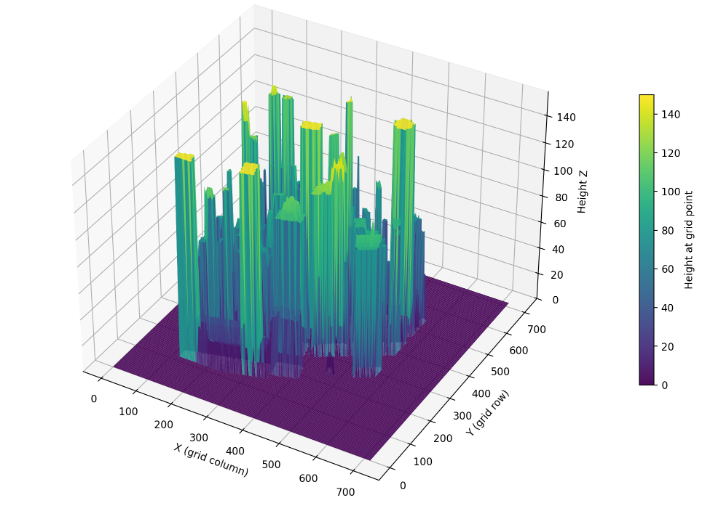
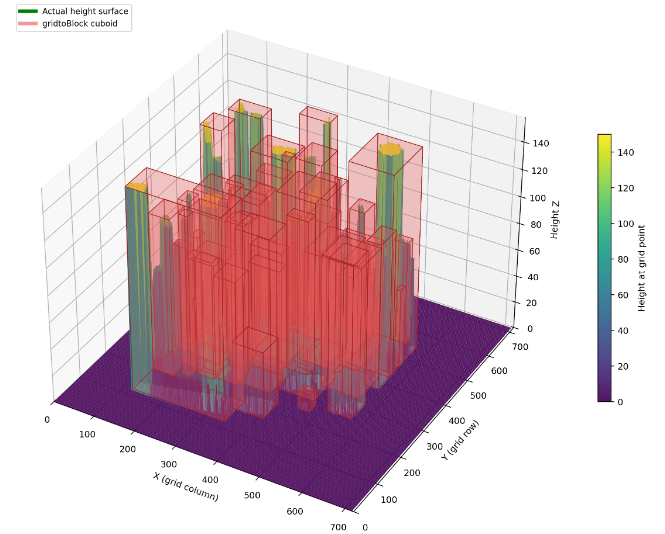
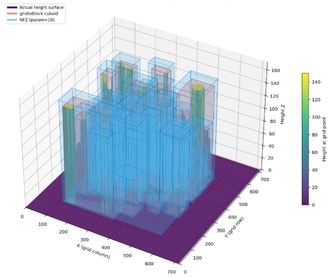
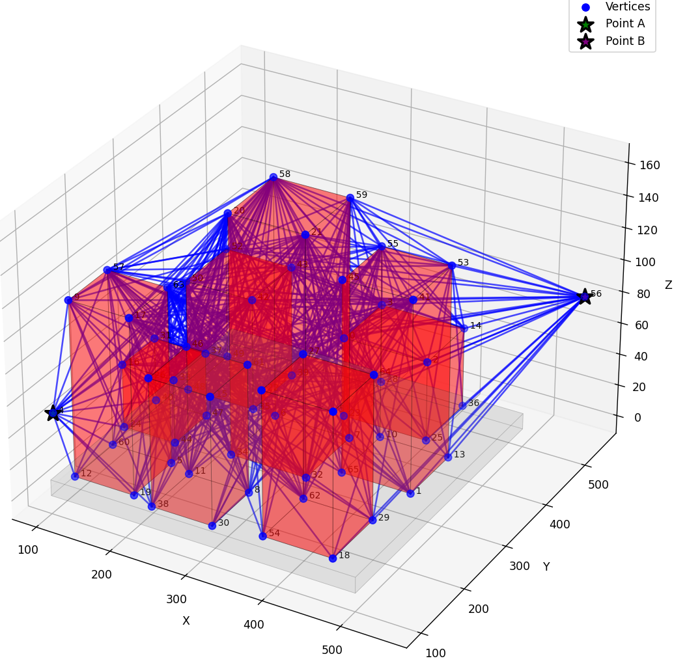
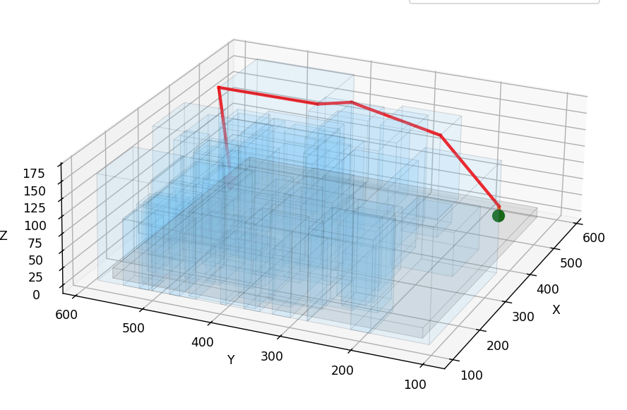
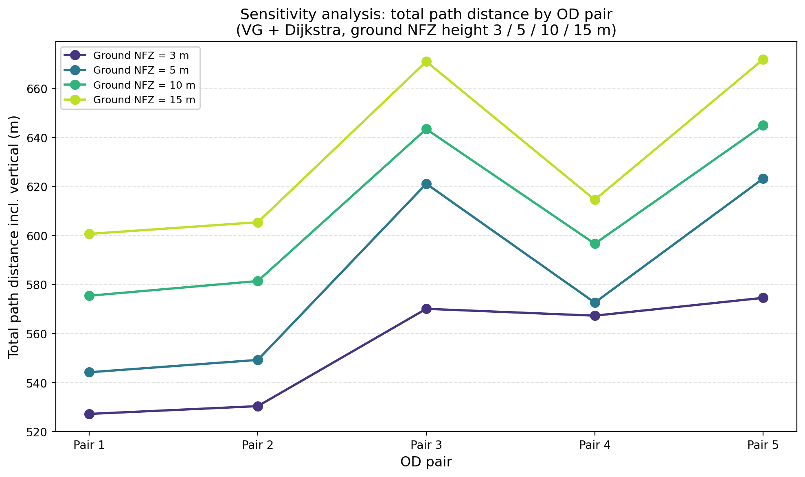
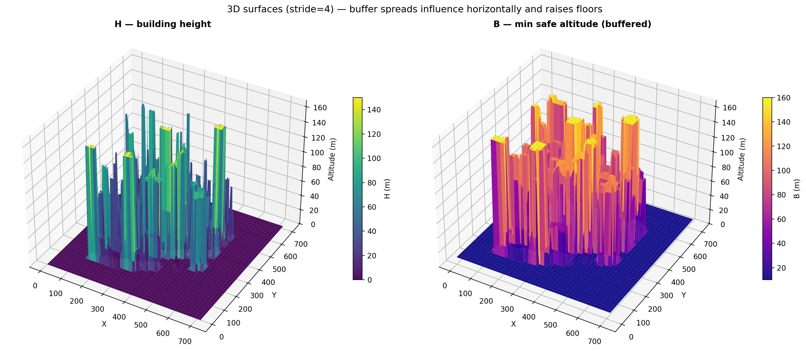
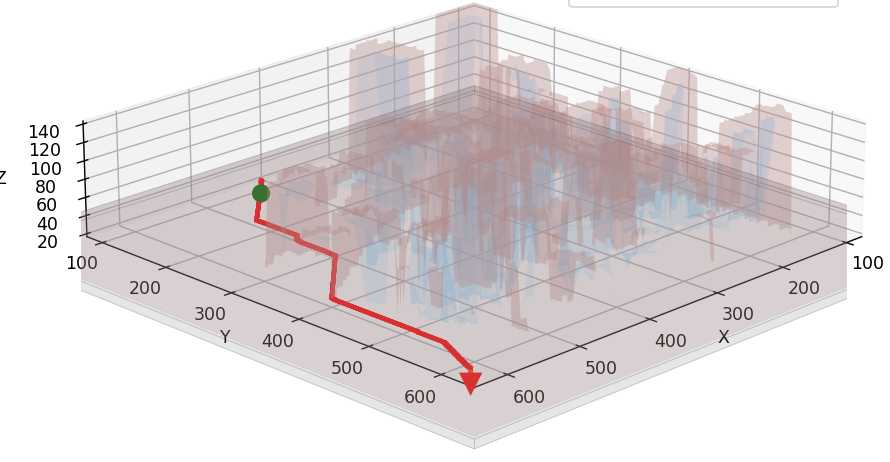
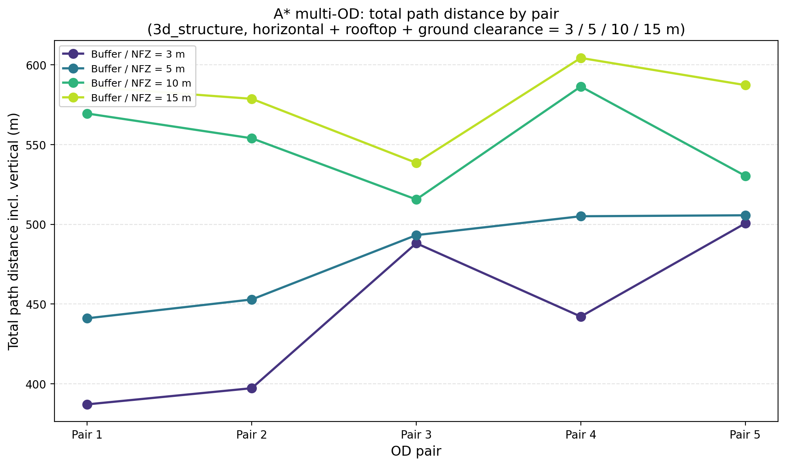
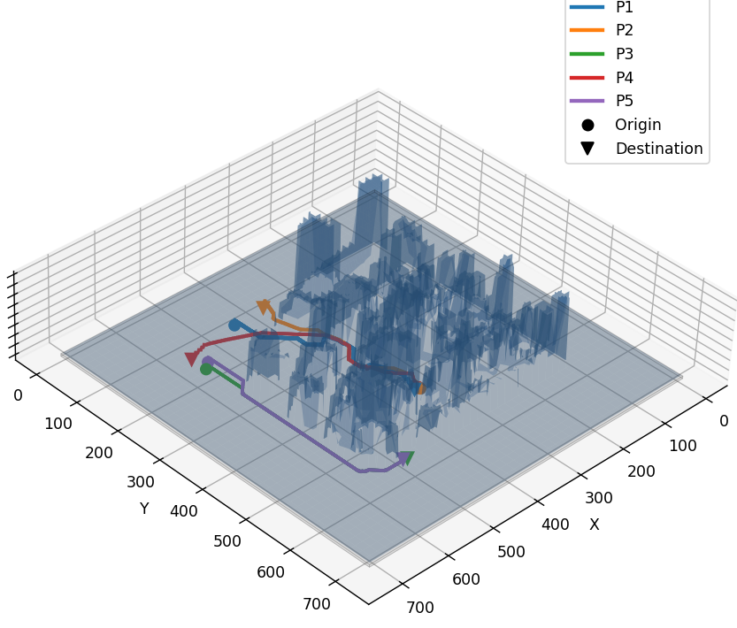

Graduate capstone · Cornell
Comparative Frameworks for 3D Urban Path Planning
3D geometry creation · Algorithm selection · Sensitivity analysis
- Goal
- Framework 1
- Framework 2
- Comparative study
Urban airspace is becoming contested as autonomous delivery and UAM systems grow. This capstone compares two 3D path planning pipelines on a dense 73 building demo city with five origin destination pairs and four ground clearance levels (3, 5, 10, 15 m).
Goal: Compare visibility graph + Dijkstra and buffer field 3D A*, and recommend VG + Dijkstra for Hong Kong style city scale UAM versus buffer + A* for shorter, grid refined routes.
BriefSystems engineering demonstration
Structures an urban air mobility routing problem as comparable architectures, runs sensitivity analysis on no fly zone clearance, and recommends VG + Dijkstra for city scale operations versus buffer + A* when minimum distance justifies heavier compute.
Framework 1: VG + Dijkstra
Pipeline A: raster grid → building cuboids → no fly zone cuboids → visibility graph → Dijkstra shortest path.
-
Grid → building cuboids
2D height grid: cells with height > 0 form 8 connected clusters; each cluster becomes one axis aligned cuboid (flat roof at cluster max height). Output:
building_cuboids.json.
Raster input (per cell height) 
One cuboid per connected cluster -
No fly zone addition
Expand each building cuboid by buffer parameters; add ground NFZ slab over map footprint (z = 0 to clearance height). Output:
only_nfz_map_*.jsonfor routing.
Building cuboids from building_cuboids.json
Buffered building NFZ (blue) and ground clearance slab -
Visibility graph
Represent free 3D space as a graph: nodes are key points and edges are straight, collision free sight lines between them.
- Nodes: start, goal, and corners of each building and ground NFZ cuboid.
- Edges: connect two nodes only if the segment does not pass through any NFZ interior.
- Rule: no horizontal travel on the ground plane (z ≈ 0).
Output: all feasible straight moves between origin and destination — not the final route yet.

Collision free sight lines between corners -
Dijkstra shortest path
On the visibility graph, find the minimum total 3D distance from start to goal.
- Edge cost: Euclidean length of each visible segment (all weights ≥ 0).
- Method: expand from start with a min heap; always process the closest unvisited node next.
- Guarantee: shortest path on this graph when edge costs are non negative distances.
Few waypoints along straight segments; ground NFZ forces vertical lift when origin or destination is on the surface.

Minimum distance path on sparse corner graph
Sensitivity analysis
Question: How does ground NFZ height affect routes when OD points start on the ground?
Constants: Same 73 building map, same 5 OD pairs, VG + Dijkstra. Variable: Ground NFZ top height → 3, 5, 10, 15 m.
Observations
- Higher NFZ → higher minimum flyable altitude → longer 3D paths.
- Vertical lift at OD dominates gap between horizontal and total path length.
- Path topology similar across pairs; sensitivity is mainly altitude and length, not failure to find a path.
- Demo range at 15 m clearance: ~527–672 m total distance per pair.
VG + Dijkstra: longer paths as ground clearance increases; largest change from 3 m → 10 m for most pairs.

Framework 2: Buffered A*
Pipeline B: building height grid H → buffer altitude field B (2.5D) → 3D A* on a fine cell graph with z ≥ B.
-
Height grid → buffer NFZ field
From raster
3d_structure, apply horizontal buffer around building cells and rooftop clearance; each cell gets minimum safe altitude B. Ground clearance applies where buildings do not dominate. Outputs:3d_structure_nfz10.csv,3d_structure_height.csv.
Raster input (per cell height) 2.5D buffer spreads influence horizontally and raises floors -
3D A* shortest path
On a 3D cell graph, find the minimum 3D path length from start to goal while staying at or above B.
- Feasibility: fly only if z ≥ B[row, col]; 26 connected grid neighbors.
- Edge cost: Euclidean 3D step length; f = g + h with admissible straight line h to goal.
- Method: best first search — expand the node with smallest f = g + h (min heap).
Many grid waypoints (~330–480 per route on demo map); typically shorter total distance than Framework 1 at the same clearance levels.

Minimum distance path on discretized 3D grid
Sensitivity analysis
Question: How does ground NFZ height affect routes when OD points start on the ground?
Constants: Same 73 building map, same 5 OD pairs, buffer + 3D A*. Variable: Ground / buffer clearance → 3, 5, 10, 15 m.
Observations
- Higher buffer → longer paths for all 5 pairs; biggest jump from 3 m to 10 m; 10 m ≈ 15 m for most pairs.
- Pair 1 most sensitive (~387 → 586 m); Pair 5 least (~501 → 587 m).
- Per pair compute: ~4–38 s @ 3 m clearance → ~41–147 s @ 10 m (up to ~1.8M node expansions on 720×720 grid).
Buffered A*: lower total distance than Framework 1 at the same clearance levels, with much higher search cost as buffer tightens.

Comparative study
Output comparison and model setup comparison on the same demo city (3d_structure, 720×720 cells).
Framework comparison
| Aspect | Framework 1 (VG + Dijkstra) | Framework 2 (Buffer + A*) |
|---|---|---|
| Preprocessing | Grid → cuboids → NFZ cuboids per scenario | H CSV → B buffer CSV per scenario |
| Search space | Sparse: NFZ corners + OD (tens to low hundreds of nodes) | Dense: full grid × altitude layers |
| Per pair compute | Light VG + Dijkstra on small graph | Heavy: millions of expansions at tight clearance |
| Scaling (dense city) | NFZ build once; routing stays sparse → many OD / replanning | Expansions grow with clutter → poor Hong Kong scale fit without acceleration |
| Path length | Longer (cuboid over approximation): ~527–672 m | Shorter (finer grid): ~387–604 m |
| Waypoints | Few corner to corner segments | ~330–480 grid steps per route |
Framework 1: few points to process → fast routing after NFZ is built; path is not the geometric minimum in the true city. Framework 2: finer search → closer to minimum in the buffer model; needs significantly more CPU, memory, and time.
Sensitivity comparison

Both show longer paths as clearance grows (3 m → 15 m). Framework 2 is ~8–20% shorter on average at 3 m but with far higher search cost. Trends align; absolute metres differ because cuboid NFZ ≠ raster buffer B.
Conclusions & recommendations
- Hong Kong scale UAM: Prefer Framework 1 (VG + Dijkstra) for city scale dispatch and replanning.
- Local / offline planning: Use Framework 2 when minimum distance matters and heavy compute is acceptable (vertiport corridors, range critical flights).
- Limitations: F1 cuboids over approximate buildings; F2 is 2.5D buffer and grid stepped.
Capstone team: Janhavi Gaikwad and Zhaoyao Bao. Full slides with interactive route visuals: download presentation.